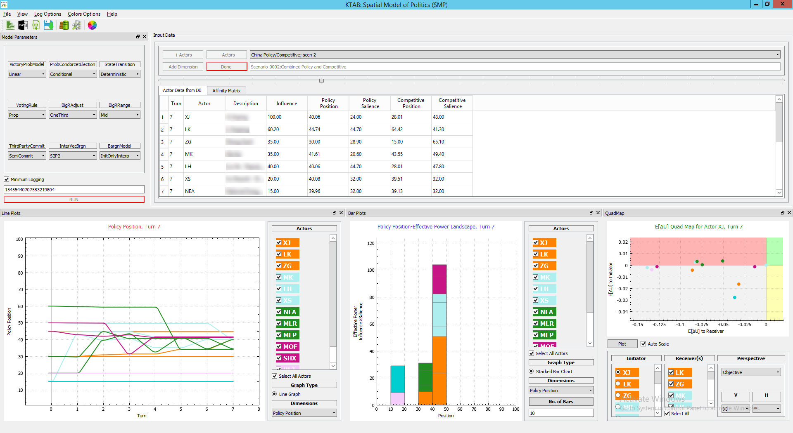

KAPSARC's Toolkit for building models of Collective Decision-Making Processes
SMP Release Version 1.1 Archive dated: 16 August 2017
Click here to See What's New in this Version!
An Introduction to the KAPSARC Toolkit for Behavioral Analysis (KTAB)
Multidimensional Bargaining Using KTAB
Group Choice with Interdependent Sublinear Voting
Toward the Integration of Policymaking Models and Economic Models
Reforming the Role of State-Owned Enterprise in China’s Energy Sector
Policy Options for Reducing Water for Agriculture in Saudi Arabia
KTAB is an open-source toolkit for assembling models that allow the systematic and rigorous analysis of Collective Decision-Making Processes (CDMPs). KTAB has been developed to meet the need for widely available, state-of-the-art, supported, and open-source software that facilitates the modeling and analysis of collective decision-making.

The main development site for KTAB is the King Abdullah Center for Petroleum Studies and Research. Research is distributed at OpenKAPSARC, and the main page for KTAB research and other information is here.
All KTAB models represent stochastic decision-making among comparatively small numbers of actors or stakeholder groups (more than one, but less than hundreds), within the paradigm of "Probabilistic Condorcet Elections". PCEs are used to estimate the likelihood of different outcomes from a CDMP, depending on the options each agent has or can generate, how they value those options, and the coalitions they can form to support or oppose each option. Details can be found in the online documentation as well as articles on the main KTAB page.
KTAB is intended to be a platform that contains a number of models that can simulate CDMPs. The initial model that has been instantiated in KTAB is called the Spatial Model of Politics (SMP). The class of models represented by the SMP has a long history in the academic discipline of political science. More detail on the SMP, and references to the appropriate literature, can again be found in articles available for download on the main KTAB page. The majority of the development team’s current efforts are focused on producing a GUI for the SMP. The official version with a working GUI is now available for download.
Installation of the SMP application on Windows is simple.
Nothing else should be required to run the application executable KTAB_SMP.exe.
Examples are provided to illustrate the range of modeling which can be done in the framework and to provide templates for further work. Examples in the kmodel directory include the following:
These are merely illustrative examples. For rigorous work, one could make whatever local modifications are needed to produce a model which met one's own standards for validation.
KTAB is written in portable, cross-platform C++11.
KTAB uses CMake for configuration; downloads and instructions can be obtained here. The basic procedure is to configure kutils with CMake, then build the library and examples with your favorite IDE. Then configure kmodel with CMake and build it. Detailed build instructions can be found in the subdirectories, starting with kutils' README. After building kutils, you can follow kmodel's README. Following these instructions, under both Windows and Linux, it is not necessary to modify your PATH at any point of the installation.
Example of how to build models outside the main library structure, as one would do for a custom model, are in the examples directories; see the overall README and the README files for each.
The code is compiled, linked, and tested with absolutely no modification, simultaneously on both Windows and Linux: there is one single body of cross-platform code, not separate versions for each OS. All platform- or system-specific configuration is done by CMake. Because no platform-specific code is allowed, porting to Mac or other platforms should be feasible. It was developed and tested on 64-bit Windows and Linux platforms, including the following:
The C++11 standard is supported by the following versions of these common compilers:
We expect to upgrade to C++17 when it becomes well-supported by gcc, clang, and Visual Studio, especially structured bindings, aka parallel assignment with pattern matching.
A graphical front-end is under development. The current GUI version of the SMP, KTAB_SMP has been developed in Qt. Qt is dual-licensed under both commercial and open-source terms; details can be found here. The Qt licensing page states that dynamically linking an application to the open-source Qt libraries does not make the application open-source.
Previous work toward a graphical front-end was based on the FLTK project. FLTK is a cross-platform, C++ toolkit provided under the terms of the GNU Library Public License, Version 2 with exceptions that allow for static linking; details can be found here. The source code and build instructions for the most recent stable version can be obtained here. FLTK also uses CMake for configuration, then your favorite IDE to build.
Because the libraries that analyze negotiation are completely separate from the applications that use them, developers are perfectly free to write command line applications or use other GUI toolkits. Along these lines, the GUI work is expected to diversify into other toolkits, such as WxWidgets, or even a web interface such as Wt.
We have also included a python script, pySMP.py to demonstrate how to use the python to execute the SMP model using a shared library. We anticipate adding a similar sample script for Java at a later date.
For authoritative ruling on licensing issues, consult appropriate counsel.
To read and write XML data files, KTAB uses the TinyXML2 library, which is available on GitHub.
If you are interested in contributing code, ideas, or data to KTAB, please contact us.
KTAB is released under The MIT License (Expat). For details, see the following URLs:
Copyright KAPSARC. Open source MIT License.